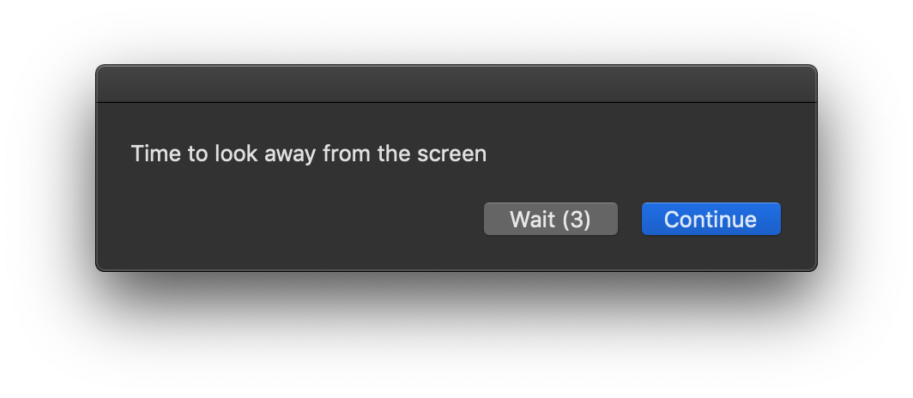

Intervention high-level 01
20-20
An application that reminds you to look away from your computer every 20 minutes for 20 seconds.
Other iterations: 11 01
Other iterations: 11 01
A short video of the application auto-advancing and changing the screen brightness to 0.
(Note: Screen recordings ignore the brightness settings.)
(Note: Screen recordings ignore the brightness settings.)
A video of the user delaying the application.

The window the user is prompted with to look away.
Why it was selected
I chose to continue prototyping this application because I had the most feedback for it and I knew it would be the best intervention to iterate and build upon.
Feedback & Future Iterations
The biggest change was removing the countdown timer and making the screen turn off by setting the brightness to 0. I also limited the number of times someone could wait and delay the application.
In testing the application, people would typically look away from the blank screen, so it could be considered a success. However, people also found it annoying, especially when they were "in the zone."
Other features I would like to add would be the ability to play audio while the screen is off. For example, the audio could tell a random fact, play music, or tell a story. Another feature (although computationally intensive) would use computer vision and face detection to make sure the user is looking away or has their eyes closed.
Other features I would like to add would be the ability to play audio while the screen is off. For example, the audio could tell a random fact, play music, or tell a story. Another feature (although computationally intensive) would use computer vision and face detection to make sure the user is looking away or has their eyes closed.
AppleScript Code:
-- (c) 2018 Will Kuglen
-- Variables
property idleDelay : 1200
property waitDelay : 60
property waitsRemaining : 3
property reminderFrequency : 60
property lookAwayTime : 20
property autoLookAway : 5
on idle
my lookAway()
return idleDelay
end idle
on lookAway()
tell application "System Events"
set activeApp to name of first application process whose frontmost is true
end tell
set UserNotReady to true
repeat until UserNotReady is false
activate
set waitSTR to "Wait (" & waitsRemaining & ")"
set Response to display dialog "Time to look away from the screen" buttons {waitSTR, "Continue"} default button "Continue" giving up after autoLookAway
set gaveUp to gave up of Response
if waitsRemaining is less than or equal to 0 or gaveUp or button returned of Response is "Continue" then
set UserNotReady to false
else
set waitsRemaining to waitsRemaining - 1
delay waitDelay
end if
end repeat
goToBlack()
activate application activeApp
end lookAway
on goToBlack()
tell application "System Preferences"
if it is running then
quit
end if
end tell
delay 0.2
tell application "System Preferences"
reveal anchor "displaysDisplayTab" of pane "com.apple.preference.displays"
end tell
tell application "System Events" to tell process "System Preferences" to tell window "Built-in Retina Display"
set originalVal to value of value indicator 1 of slider 1 of group 1 of tab group 1
set value of value indicator 1 of slider 1 of group 1 of tab group 1 to 0.0
end tell
delay lookAwayTime
tell application "System Events" to tell process "System Preferences" to tell window "Built-in Retina Display"
set value of value indicator 1 of slider 1 of group 1 of tab group 1 to originalVal
end tell
quit application "System Preferences"
end goToBlack
on quit
continue quit
end quit